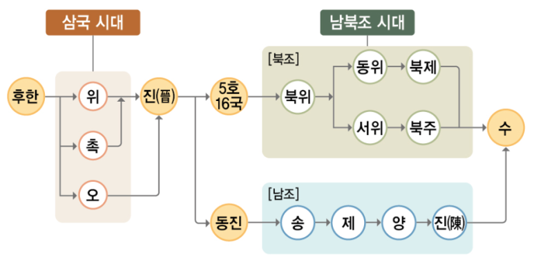
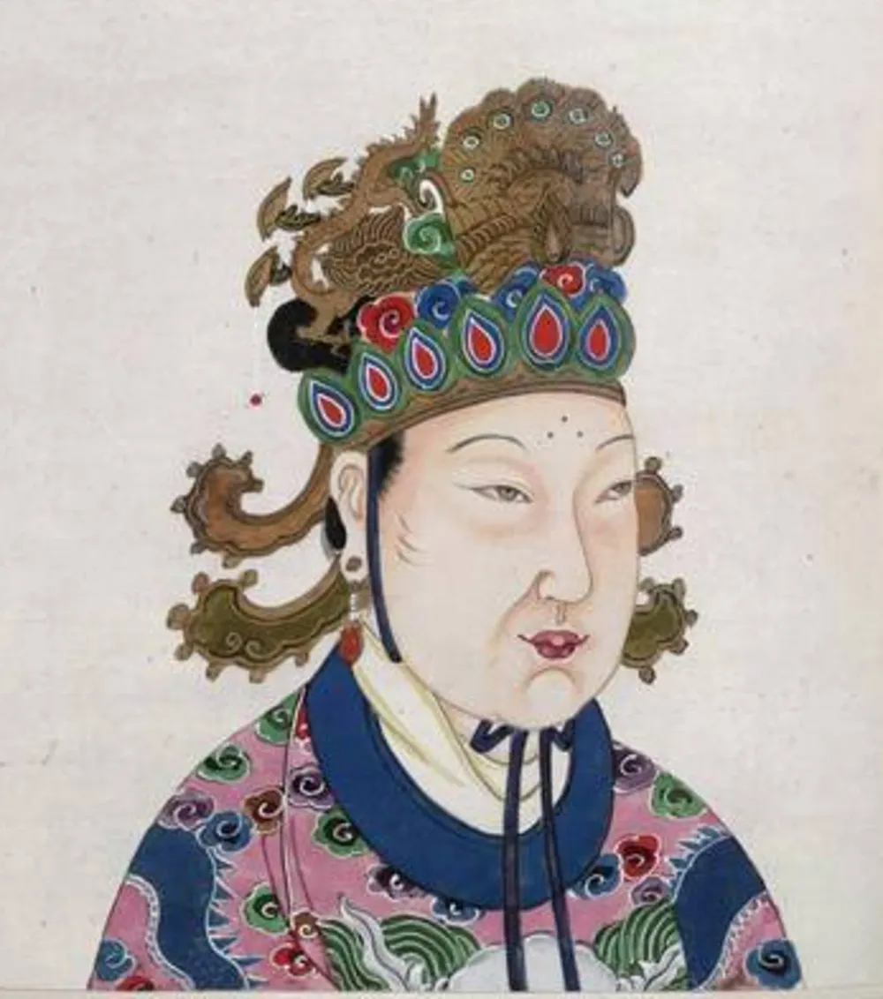
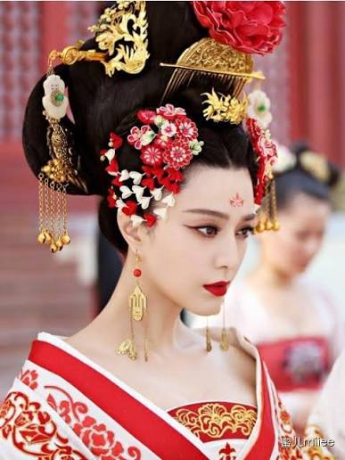
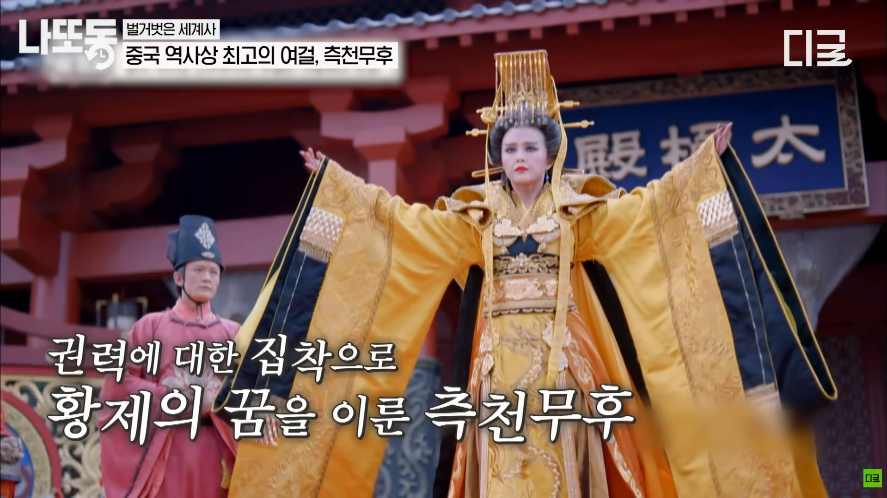

🏯
세계사 · Ⅰ-2. 동아시아, 인도 세계의 형성 — 학습지 9~12쪽
✦ ✦ ✦
교과서 26~30쪽
02. 수, 당 제국
◆
위진 남북조 시대 · 수의 통일 · 당의 발전 · 동아시아 문화권의 형성
◆
🔄
지난 시간 복습 — 메소포타미아 vs 이집트 문명
| 구분 | 메소포타미아 | 이집트 |
|---|---|---|
| 발생지 | 티그리스·유프라테스강 | 나일강 유역 |
| 지형 | 개방적 → 지배 세력 잦은 교체 | 폐쇄적(사막·바다) → 안정적 왕조 |
| 최고 통치자 | 왕 = 지배자, 제사장 (신정 정치) | 파라오 (태양신 '라'의 아들) |
| 세계관 | 현세 중시 (길가메시 서사시) | 내세적 (사후 세계 중시) |
| 문자 | 쐐기 문자 | 상형 문자 (파피루스에 기록) |
| 역법·수학 | 태음력 · 60진법 | 태양력 · 10진법 |
| 대표 건축 | 지구라트 | 피라미드 (파라오의 무덤) |
| 대표 법전 | 《함무라비 법전》 | — |
🔄
지난 시간 복습 — 인도 문명
🏙️ 인도 문명
- 기원전 2500년경 인더스 강 상류 펀자브 지방에서 드라비다인이 형성한 것으로 추정
- 계획도시 하라파, 모헨조다로 건설
🚶 아리아인의 이동과 사회
- 기원전 1500년경 아리아인 진출 — 중앙아시아에서 북인도로 이동, 이후 갠지스강까지 진출
- 원주민을 지배하기 위해 카스트제 성립(브라만·크샤트리아·바이샤·수드라)
- 자연신을 숭배하는 브라만교 성립, 경전 《베다》 사용
🔄
지난 시간 복습 — 중국 문명
🌊 하·상 왕조
- 기원전 2500년경 황허강과 창장강 일대에서 문명 발전, 하 왕조(얼리터우 유적)는 문헌상 최초의 국가
- 상 왕조: 왕이 점친 내용을 갑골에 기록하는 신권 정치 실시
- 점친 내용과 결과를 갑골문으로 기록 → 한자의 기원
⚔️ 주 왕조
- 상을 멸망시키고 건국, 왕이 수도 인근을 직접 지배하고 제후에게 나머지 지역을 다스리게 하는 봉건제 실시
- 혈연에 기초한 종법 제도 발전
🔄
복습 — 춘추 전국 시대 빈칸 채우기
◆
춘추 전국 시대 복습
- 춘추 시대에는 춘추 5패가 존왕양이를 명분으로 제후국들을 통솔하였다.
- 전국 시대에는 전국 7웅이 서로 패권을 다투는 약육강식의 시대였다.
- 부국강병을 위한 제후국들의 경쟁 속에서 유가·법가·도가·묵가 등 다양한 사상가 집단인 제자백가가 등장하였다.
🔄
복습 — 진나라 빈칸 채우기 (1)
◆
진나라 복습
- 기원전 221년 전국을 통일한 진왕 정은 스스로를 시황제라 칭하였다.
- 진시황제는 전국에 관리를 파견하여 다스리는 군현제를 실시하였다.
- 중앙 집권 강화를 위해 화폐 통일과 도량형 통일을 단행하였다.
🔄
복습 — 진나라 빈칸 채우기 (2)
◆
진나라 복습
- 사상 통제를 위해 책을 불태우고 유생들을 산 채로 묻은 분서갱유를 단행하였다.
- 북방 흉노족의 침입을 막기 위해 만리장성을 축조하였다.
- 대규모 토목 공사와 무리한 대외 원정으로 백성들의 불만이 커져 진승 오광의 난 등 농민 반란이 일어났고, 결국 진은 멸망하였다.
🔄
복습 — 한나라 빈칸 채우기
◆
한나라 복습
- 한 고조(유방)는 봉건제와 군현제를 절충한 군국제를 실시하였다.
- 한 무제는 유교를 통치 이념으로 삼아 오경박사를 설치하고 태학을 설립하였다.
- 인재 등용을 위해 지방관이 향촌의 인물을 추천하는 향거리선제를 실시하였다.
- 물자 유통과 재정 확충을 위해 균수법과 평준법을 시행하고, 화폐를 오수전으로 통일하였다.
⚔️
학습지 9쪽 — 1. 위진 남북조 시대 (1) 삼국 시대
◆
1. 위진 남북조 시대
⚔️ (1) 삼국 시대
- 전개: 후한 말 위·촉·오가 경쟁하는 삼국 시대 전개
- 삼국 통일: 3세기 위를 계승한 진이 삼국 시대 통일
=======
>>>>>>> Stashed changes
<<<<<<< Updated upstream
🌊
학습지 9쪽 — 1. 위진 남북조 시대 (2) 진의 강남 이주
◆
1. 위진 남북조 시대
🌊 (2) 진의 강남 이주
- ① 진의 내분 → 5호 16국 시대: 흉노·선비·저·갈·강 등 5호가 화북 지방에 나라를 세움 → 5호의 남하로 진의 수도 상실
- ② 동진 건국: 진의 일부 황실 세력이 강남으로 이주하여 건국
=======
>>>>>>> Stashed changes
<<<<<<< Updated upstream
🏰
학습지 9쪽 — 1. 위진 남북조 시대 (3) 북위의 화북 통일
◆
1. 위진 남북조 시대
🏰 (3) 북위의 화북 통일
- ① 통일(439): 4세기 선비족이 세운 북위가 화북 통일
- ② ➊ 효문제의 한화 정책: 평성에서 뤄양으로 천도, 조정에서 선비어·복장 금지, 선비족과 한족의 결혼 장려
- ③ 효문제 이후 남북조: 북조(동위·서위로 분열), 남조(정치 불안정으로 계속된 왕조 교체)
=======
<<<<<<< Updated upstream
>>>>>>> Stashed changes
📜
학습지 9쪽 — 1. 위진 남북조 시대 (4) 문화
◆
1. 위진 남북조 시대
📜 (4) 위진 남북조 시대의 문화
- ① 호한 융합: 북방 민족과 한족의 문화 융합
- ② 화북 지방: 국가적 차원의 불교 장려 → 윈강 석굴 등 조성
- ③ 강남 지방: 한족 이주(농업 생산력의 발전)
📜
학습지 9쪽 — 1. 위진 남북조 시대 (4) 문화
◆
1. 위진 남북조 시대
📜 (4) 위진 남북조 시대의 문화
- ④ 문벌 사회 형성: ➋ 9품중정제(추천에 따른 인재 선발) → 문벌 사회 형성 → 고위 관직 독점, 대토지 소유
- ⑤ 청담 유행: 정치적 혼란 속에서 자유로운 삶 추구 → 죽림칠현 등
🗺️
학습지 9쪽 — 위진 남북조 지도

=======
>>>>>>> Stashed changes
<<<<<<< Updated upstream
🏛️
학습지 9쪽 — 2. 수의 통일
◆
2. 수의 통일
🏛️ 수의 건국·통치·멸망
- 통일: 북주의 외척 양견(문제)의 수 건국(581) → 남북조 시대 통일(589)
- 문제: ➌ 과거제 실시(9품중정제 폐지), 3성 6부제 마련, 균전제·조용조·부병제 유지·정비
- 양제: 대운하 완성, 돌궐과 고구려 원정
- 멸망: 대외 원정·대규모 토목 공사 → 농민 반란·내분으로 30여 년 만에 멸망(618)
=======
>>>>>>> Stashed changes
<<<<<<< Updated upstream
🏗️
학습지 11쪽 — 1. 당의 발전 (건국)
◆
1. 당의 발전
🏗️ 건국
- 각지의 반란·내분으로 수 멸망 → 이연(고조)이 당 건국(618)
=======
>>>>>>> Stashed changes
<<<<<<< Updated upstream
🐎
학습지 11쪽 — 1. 당의 발전 (태종)
◆
1. 당의 발전
🐎 태종
- 동돌궐 정복, 율령 체제 정비('정관의 치')
=======
>>>>>>> Stashed changes
<<<<<<< Updated upstream
🛡️
학습지 11쪽 — 1. 당의 발전 (고종)
◆
1. 당의 발전
🛡️ 고종
- 서돌궐 복속, 백제와 고구려 멸망
=======
>>>>>>> Stashed changes
<<<<<<< Updated upstream
👪
심화 — 당 태종·고종과 측천무후의 관계도
◆
당 태종
제2대 황제
측천무후
태종의 후궁
당 고종
제3대 황제
🖼️
심화 — 측천무후의 초상


=======

>>>>>>> Stashed changes
<<<<<<< Updated upstream
👸
심화 — 당 고종과 후궁들의 관계도
◆
당 고종
제3대 황제 (재위 649~683)
왕황후
고종의 정비(원비)
소숙비
고종의 총애를 받던 후궁
측천무후
태종의 후궁 출신,
고종의 후궁으로 재입궁
고종의 후궁으로 재입궁
🖼️
심화 — 측천무후 가계도
🖼️
심화 — 측천무후 소개

=======
>>>>>>> Stashed changes
<<<<<<< Updated upstream
👑
학습지 11쪽 — 1. 당의 발전 (현종)
◆
1. 당의 발전
👑 현종
- 당의 전성기
=======
>>>>>>> Stashed changes
<<<<<<< Updated upstream
📉
학습지 11쪽 — 1. 당의 발전 (쇠퇴)
◆
1. 당의 발전
📉 쇠퇴
- 8세기 균전제 붕괴 → ➊ 양세법 실시, 모병제 확대
- 안사의 난·황소의 난으로 쇠퇴 → 절도사 주전충에 의해 멸망(907)
=======
>>>>>>> Stashed changes
<<<<<<< Updated upstream
🎨
학습지 11쪽 — (2) 당의 사회·경제·문화
◆
1. 당의 발전
🎨 (2) 당의 사회·경제·문화
- 사회: 과거제와 음서를 통한 문벌 사회
- 경제: 농업 생산력의 발전, 상업 발달(비전 사용, 행 결성 등)
- 문화: 《오경정의》(훈고학 집대성·과거 수험서), 수도 장안성의 번영, 이백·두보 등 시인 활약, 당삼채, 불교·도교 발달, 외래 종교 유행(조로아스터교 등)
=======
>>>>>>> Stashed changes
<<<<<<< Updated upstream
🌏
학습지 11쪽 — 2. 동아시아 문화권의 형성 (배경·형성)
◆
2. 동아시아 문화권의 형성
🌏 배경
- 책봉·조공으로 주변 국가와 긴밀한 관계 유지
- 당과 한반도, 일본 사이에 활발한 문화 교류
🔄 형성
- 동아시아 각국, 당의 선진 문물 적극적으로 수용 → 고유문화와 융합하여 독자적 문화를 형성
=======
>>>>>>> Stashed changes
<<<<<<< Updated upstream
📚
학습지 11쪽 — 2. 동아시아 문화권의 형성 (공통 요소)
◆
2. 동아시아 문화권의 형성
📚 공통 요소
- 유교: 충·효를 강조하여 사회 질서 확립
- 불교: 왕즉불 사상 → 군주권 강화
- ➋ 율령: 법과 제도를 통한 국가 통치 보조
- 한자: 동아시아 각국의 의사소통, 사상 전달 수단
=======
>>>>>>> Stashed changes
<<<<<<< Updated upstream
✏️
학습지 10쪽 — 개념 확인 문제 1번
◆
개념 확인 문제 — 1번
빈칸에 들어갈 알맞은 말을 쓰시오.
⑴
북위의 효문제는 수도를 뤄양으로 옮기고, 선비족의 언어와 복장을 금지하였으며, 선비족과 한족의 결혼을 장려하는 ( 한화 정책 )을/를 실시하였다.
⑵
수 양제는 강남과 화북을 연결하는 ( 대운하 )을/를 완성하였고, 이는 남북 간 경제 통합에 이바지하였다.
=======
>>>>>>> Stashed changes
<<<<<<< Updated upstream
✏️
학습지 10쪽 — 개념 확인 문제 2번
◆
개념 확인 문제 — 2번
다음 내용이 옳으면 ○표, 틀리면 ×표 하시오.
⑴
수 문제는 문벌을 견제하고 중앙 집권을 강화하기 위하여 9품중정제를 실시하였다.
×
⑵
위진 남북조 시대에는 북방 민족과 한족 사이의 문화가 융합되는 호한 융합 현상이 나타났다.
○
⑶
수는 3성 6부의 중앙 관제를 바탕으로 황제의 통치를 뒷받침하였다.
○
=======
>>>>>>> Stashed changes
<<<<<<< Updated upstream
✏️
학습지 10쪽 — 개념 확인 문제 3번
◆
개념 확인 문제 — 3번
3
수에 대한 설명으로 옳은 것은? ( ④ )
① 봉건제를 처음으로 실시하였다.
② 위·촉·오의 삼국을 통일하였다.
③ 호경에서 뤄양으로 천도하였다.
④ 과거제를 실시하여 인재를 선발하였다.
⑤ 오경박사를 설치하고 태학을 설립하였다.
=======
>>>>>>> Stashed changes
<<<<<<< Updated upstream
✏️
학습지 10쪽 — 개념 확인 문제 4번
◆
개념 확인 문제 — 4번
4
다음 제시문의 밑줄 친 '이 제도'의 이름을 쓰시오. ( 균전제 )
이 제도는 북위 효문제 시기 자영농 육성을 위한 토지 제도로 처음 시행되었다. 이에 따라 농민들은 국가로부터 일정한 면적의 토지를 지급받았다. 이후 이 제도는 농한기에 군사 훈련을 받고 전시에 군대에 복무하도록 하는 부병제, 세금 제도인 조용조와 결합되어 운영되었다. 이러한 운영 방식은 후대 왕조인 수, 당 및 동아시아 각국의 통치 체제에도 영향을 미쳤다.
=======
>>>>>>> Stashed changes
<<<<<<< Updated upstream
✏️
학습지 12쪽 — 개념 확인 문제 1번
◆
개념 확인 문제 — 1번
다음 국왕과 각 국왕에 대한 내용으로 옳은 것끼리 선으로 연결하시오.
⑴
당 고조
당 건국
⑵
당 태종
동돌궐 정복, 정관의 치
⑶
당 현종
당의 전성기, 후기에는 쇠퇴
=======
>>>>>>> Stashed changes
<<<<<<< Updated upstream
✏️
학습지 12쪽 — 개념 확인 문제 2번
◆
개념 확인 문제 — 2번
빈칸에 들어갈 알맞은 말을 쓰시오.
⑴
당 고종은 서돌궐을 복속하는 한편, 신라와 연합하여 ( 백제 ), ( 고구려 )을/를 멸망시켰다.
⑵
당은 정복지에 도호부를 설치하고 현지 유력자를 통해 간접 통치하는 ( 기미 정책 )을/를 실시하였다.
⑶
8세기경 당은 ( 안사의 난 )을/를 전후로 자영농이 몰락하고 균전제가 붕괴하였다. 이에 ( 양세법 )을/를 실시하여 재정을 확보하고 모병제를 확대하였다.
=======
>>>>>>> Stashed changes
<<<<<<< Updated upstream
✏️
학습지 12쪽 — 개념 확인 문제 3번
◆
개념 확인 문제 — 3번
3
다음 자료를 참고하여 빈칸에 들어갈 알맞은 내용을 쓰시오.
(가)는 당의 중앙 통치 제도인 ( 3성 6부제 )이며, (나)는 일본의 ( 태정관제 )이다. 일본은 당의 통치 체제를 독자적으로 수용하였으며, 일본을 비롯하여 동아시아 국가는 법과 제도를 바탕으로 하는 당의 ( 율령 ) 체제를 수용함으로써 국가 통치를 뒷받침하였다.
=======
>>>>>>> Stashed changes
✏️
학습지 12쪽 — 개념 확인 문제 4번
◆
개념 확인 문제 — 4번
당의 문화에 대한 설명으로 옳은 것을 <보기>에서 있는 대로 고른 것은?
ㄱ. 당삼채가 제작되었다.
ㄴ. 이백, 두보 등의 시인이 활약하였다.
ㄷ. 자유로운 삶을 추구하는 청담이 유행하였다.
ㄹ. 조로아스터교, 마니교, 경교 등이 유행하였다.
4
옳은 것을 있는 대로 고른 것은? ( ④ ㄱ, ㄴ, ㄹ )
① ㄱ, ㄴ ② ㄴ, ㄷ ③ ㄷ, ㄹ ④ ㄱ, ㄴ, ㄹ ⑤ ㄴ, ㄷ, ㄹ
🔄
복습 — 위진 남북조와 수 빈칸 채우기
◆
위진 남북조와 수 복습
- 북위의 효문제는 평성에서 뤄양으로 천도하고 선비족의 언어와 복장을 금지하는 등 한화 정책을 추진하였다.
- 위진 남북조 시대에는 추천을 통해 인재를 선발하는 9품중정제가 실시되어 문벌 사회가 형성되었다.
- 북위 효문제 때 처음 시행된 균전제는 농민에게 국가가 토지를 지급하는 토지 제도로, 이후 수·당 대까지 이어졌다.
🔄
복습 — 수 빈칸 채우기
◆
수 복습
- 수 문제는 9품중정제를 폐지하고 시험을 통해 인재를 선발하는 과거제를 실시하였다.
- 수 문제는 중앙 관제를 정비하여 3성 6부제를 마련하였다.
- 수 양제는 강남과 화북을 잇는 대운하를 완성하여 남북 간 경제 교류를 촉진하였다.
🔄
복습 — 당 빈칸 채우기
◆
당 복습
- 당 태종은 동돌궐을 정복하고 율령 체제를 정비하였는데, 이 시기를 정관의 치라 부른다.
- 8세기 균전제가 붕괴하는 가운데 절도사 안녹산과 사사명이 일으킨 안사의 난으로 당은 크게 쇠퇴하였다.
- 균전제 붕괴 이후 당은 토지와 자산을 기준으로 세금을 부과하는 양세법을 실시하였다.
- 결국 절도사 주전충에 의해 당은 멸망하였다(907).
<<<<<<< Updated upstream
/ 39
=======
/ 24
>>>>>>> Stashed changes